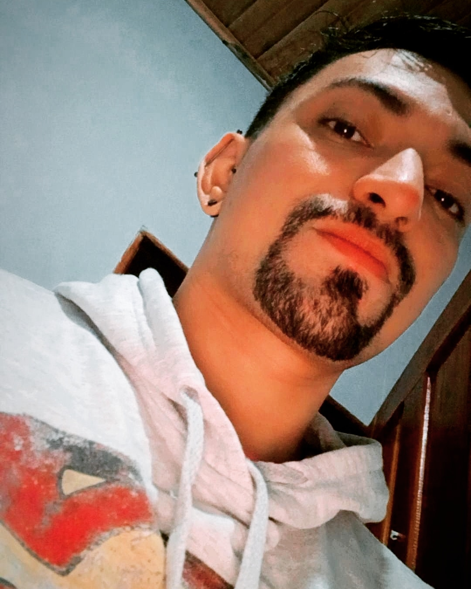

<mat-toolbar>
  <h1>< Ramon Trindade /></h1>
</mat-toolbar>

<mat-sidenav-container>
  <mat-sidenav mode="side" opened>

    
    <h4 class="name">Ramon Trindade</h4>
    <p class="designation">Desenvolvedor Front-End</p>

    <mat-divider></mat-divider> 

    <button mat-button class="menu-button">
      <mat-icon>home</mat-icon>
      <span>Inicio</span>
    </button>
    <button mat-button class="menu-button">
      <mat-icon>construction</mat-icon>
      <span>Projetos</span>
    </button>
    <button mat-button class="menu-button">
      <mat-icon>dataset_linked</mat-icon>
      <span>Tech Skills</span>
    </button>
    <button mat-button class="menu-button">
      <mat-icon>person</mat-icon>
      <span>Contato</span>
    </button>
    <mat-divider></mat-divider>
    <button mat-button class="menu-button">
      <mat-icon>info</mat-icon>
      <span>Sobre mim</span>
    </button>
  </mat-sidenav>
  <mat-sidenav-content>
    <div class="content mat-elevation-z4">Main Content</div>
  </mat-sidenav-content>
</mat-sidenav-container>
